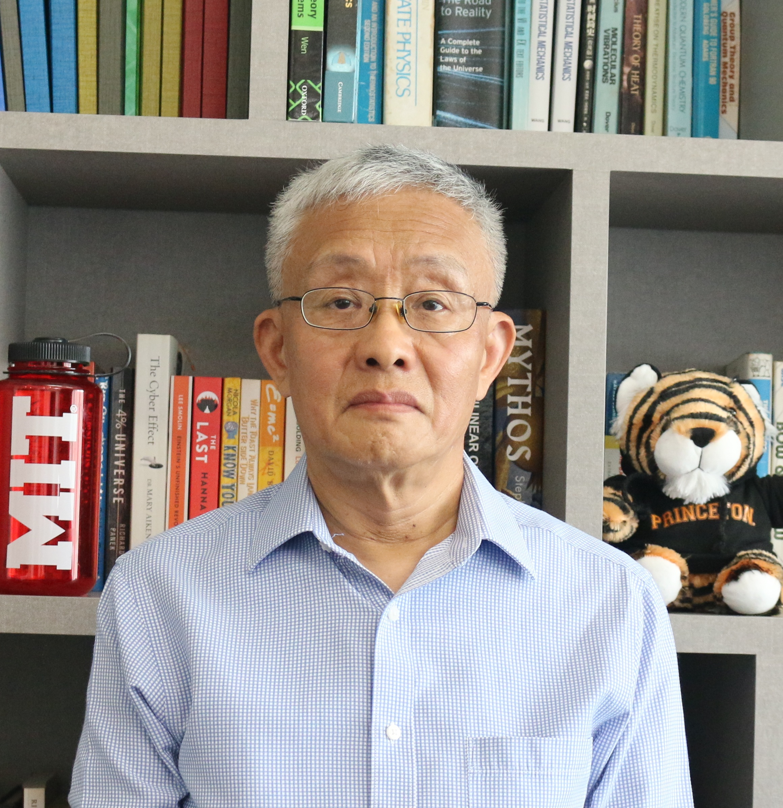

Address: Department of Physics, S12-03-15, National University of Singapore, 2 Science Drive 3, Singapore 117551.
Email: phywjs at nus · edu · sg.
Teaching: Computation and Machine, C and Fortran Programming, Monte Carlo and Molecular Dynamics, Symbolic Computing, Basic Computer Architecture & Assembly Programming, Computational Condensed Matter Physics, Computer Graphics, Neural Computing, Deep Learning, Scientific Modeling, Numerical Recipes, Advanced Statistical Mechanics, Advanced Solid State Physics, Thermodynamics and Statistical Mechanics. Also taught in the Singapore-MIT Alliance (Computing Tech and Tools, MPI, Particle Methods), TeX.
Area of Research: Monte Carlo simulation methods, nonequilibrium Green's function, thermal and electron transport in nanostructures. Near-field radiative heat transfer, Casimir force. Transport in Floquet driven systems.
Experiences: 1982 B Sc, Jilin University, China; 1984 M Sc, 1987 Ph D, Carnegie Mellon University, Pittsburgh, USA; Postdoctoral positions at Rutgers University, USA, HLRZ Jülich and Mainz, Germany. 1991 lecturer, Hong Kong Baptist College. 1993 lecturer, 1995 senior lecturer, 1998 associate professor, July 2005 professor, Department of Computational Science, National University of Singapore. Acting Head Nov 1999 - Dec 2000, Deputy Head July 2002 - Dec 2003, Dept of Computational Science. APS Fellow 2005. In Department of Physics, since Jan 2006. Deputy Head (Research), July 2010 - June 2017. Provost's Chair, July 2014 - June 2017.
Honours/MPT/AI for Science/master projects Aug 2026: See projects for details.
CV, List of Publications, and Talks